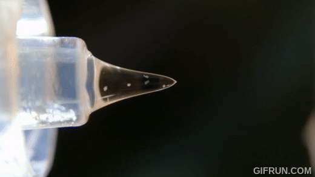
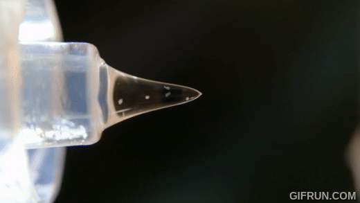

Airborne Pathogens

The Electrospray Process
Airborne Pathogens
The Electrospray Process

Our patented Electrospray Internet will be set up at various airports accross the United States. This will be a surveillance network for pathogens in the air that aims to predict and monitor health threats by analyzing air samples.
⠀⠀
The system doesn't harm the samples it takes from the air and works in real-time. It also uses genomic sequencing to better understand the genetic makeup of the pathogens detected. It could be pivotal in early detection of disease outbreaks, including those from natural occurrences or potential bioterrorism threats.
⠀⠀
The visualization on the left showcases the mass of particles that are emitted from just one person. It highlights airborne pathogen population that can be sampled.
⠀⠀
The visualization on the right showcases the electrospray process. In this phase of the electrospray, the water droplet is electrically charged and the water is made into a mist that is captured on a sampling plate. The image is then saved and sent to an AI powered database.
⠀⠀